SoDrO
Team:
- Mitrea Ana-Maria
- Iosub George-Catalin
- Arnautu Stefan
Bookmark
- 1 Introduction
- 1.1 Purpose
- 1.2 Intended Audience and Reading Suggestions
- 1.3 Product Scope
- 1.4 References
- 2 Overall Description
- 2.1 Product Perspective
- 2.2 Product Functions
- 2.3 User Classes and Characteristics
- 2.4 Operating Environment
- 2.5 Assumptions and Dependencies
- 3 External Interface Requirements
- 3.1 User Interfaces
- 3.2 Software Interfaces
- 4 Backend Description
1.Introducere
1.1 Purpose
SoDro este o aplicatie Web care realizeaza managementul preferintelor unei persoane sau grup de persoane in ceea de priveste consumul de bauturi non-alcoolice. Aplicatia ofera suport continuu pentru gestiunea informatiilor esentiale produselor si listelor de cumparaturi. SoDro detine un clasament al celor mai populare produse.
1.2 Intended Audience and Reading Suggestions
Acest site este destinat oricarei persoane ce detine un cont sau care doreste sa creeze un cont cu scopul de a cauta informatii despre diferite bauturi non alcoolice.
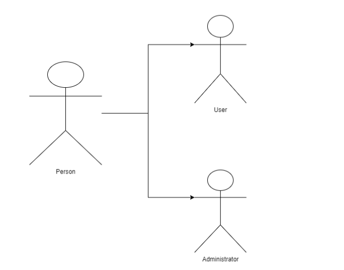1.3 Product Scope
Scopul acestui site este de a prezenta produse nonalcolice persoanelor pe care il acceseaza si de a afla preferintele acestor in functie de categoriile de bauturi. Fiecare produs este prezentat in detaliu si sunt oferite foarte multe informatii utile precum: ingrediente, alergeni, informatii nutritionale.
1.4 References
Baza de date aferenta aplicatiei a fost preluata de la Open Food Facts:
https://world.openfoodfacts.org/data2.Overall Description
2.1 Product Perspective
Flowchart Login/SignUp
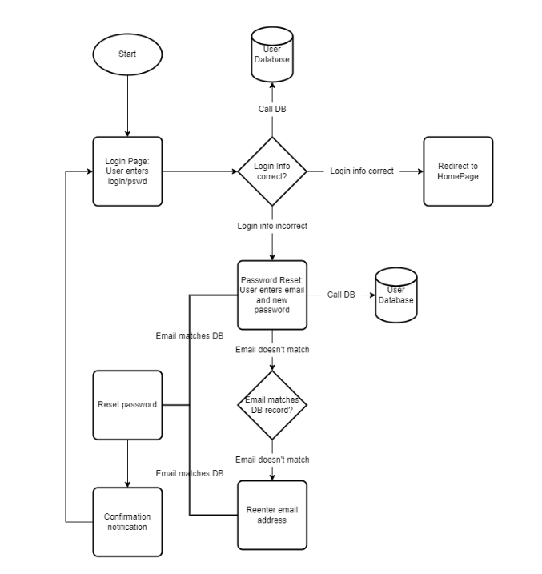Flowchart User Dashboard
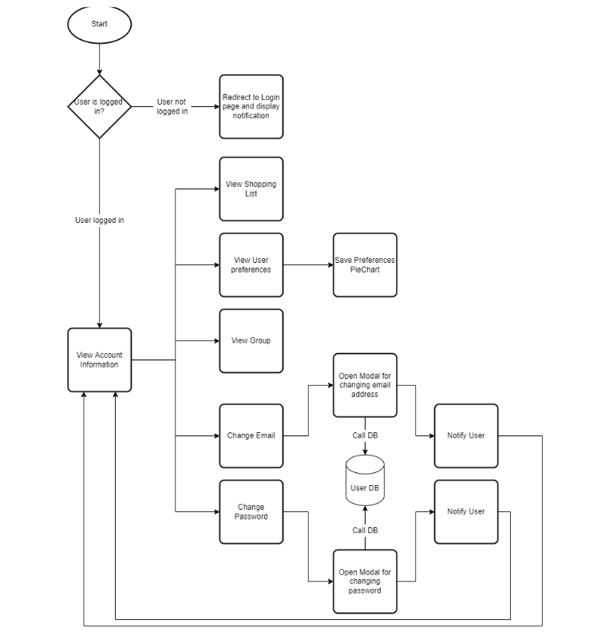Flowchart Admin Dashboard
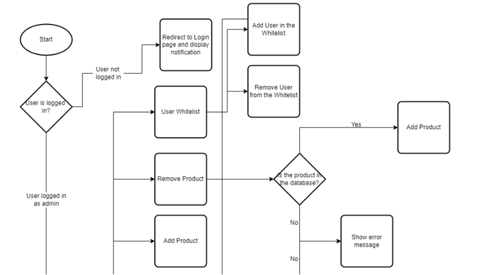 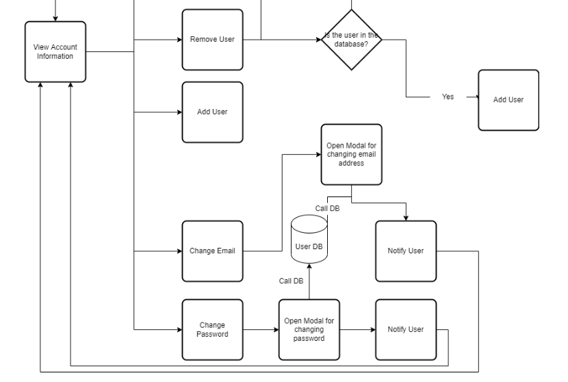Flowchart Trending
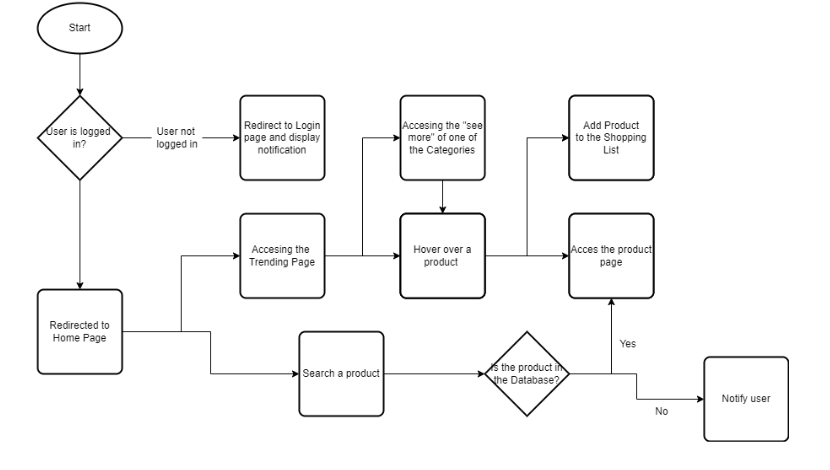Flowchart Recipes
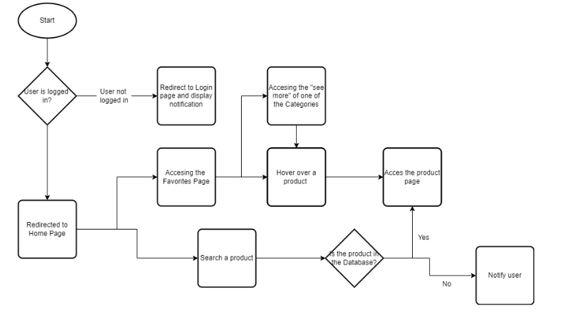Flowchart shop
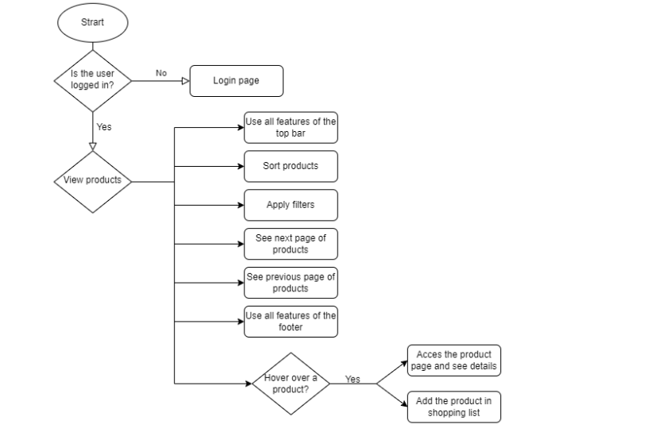Flowchart product
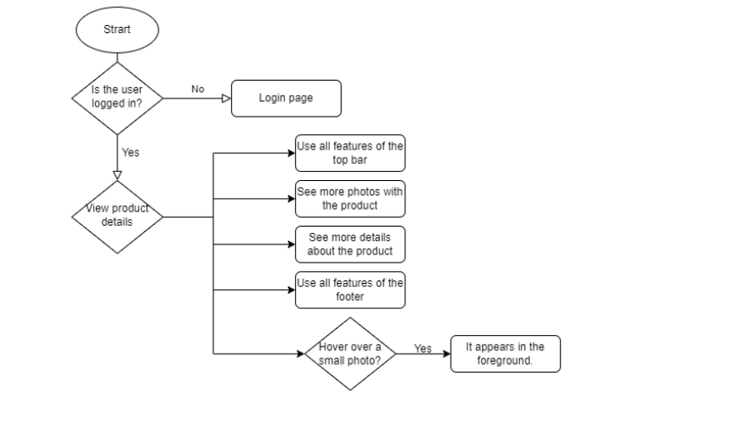2.2 Product Functions
- Autentificarea utilizatorilor
- Creare de conturi pentru utilizatori
- Crearea unei liste de produse favorite
- Accesarea sectiunilor de Trending, Recipes, Products, Favorites
- Accesarea sectiunii de User Dashboard
- Crearea unei liste de produse favorite la nivel de grup de persoane
- Vizualizarea informatiilor referitoare la fiecare produs de pe pagina
- Furnizarea unor retete ce folosesc diferite produse din aplicatie
- Furnizarea unor statistici diverse ce pot fi exportate in diferite formate
- Vizualizarea clasamentului de produse populare
2.3 User Classes and Characteristics
- Ca si utilizator, pot accesa pagina de login pentru a ma autentifica
- Ca si utilizator, pot accesa pagina de signin pentru a-mi crea cont de utilizator.
- Ca si utilizator, pot folosi functia de search din interfata principala a sitului.
- Ca si utilizator, pot accesa User Dashboard pentru a vizualiza informatiile esentiale ale contului, respectiv grupului din care fac parte.
- Ca si utilizator, pot adauga produse intr-o lista
- Ca si utilizator, pot accesa sectiunile Trending, Recipes, Products, Favorites
- Ca si administrator, pot accesa Admin Dashboard pentru a utiliza functiile de Add/Remove User, Add/Remove Product si User Whitelist.
2.4 Operating Environment
- Pentru crearea site-ului s-au folosit urmatoarele: HTML, CSS, JavaScript.
- Pentru gestiunea bazei de date se va folosi un server cu MySQL / PostgreSQL.
2.5 Assumptions and Dependencies
Aplicatia Web se poate folosi doar in cazul in care baza de date folosita este disponibila. In acest caz, orice eroare datorata bazei de date va face ca situl sa nu aiba functionalitatile respective.
3.External Interface Requirements
3.1 User Interfaces
Interfata grafica a siteului este responsive in functie de marimea ecranului. In acest fel, componentele principale ale paginilor se ajusteaza automat pentru a fi vizibile in orice situatie.
Login/SignIn Interface
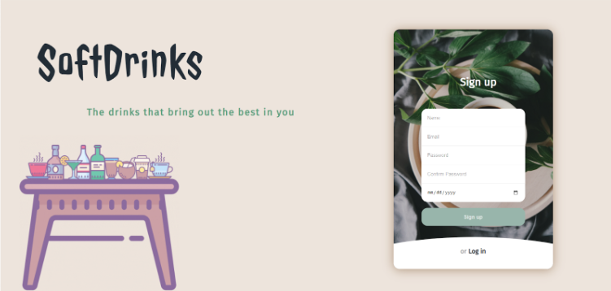 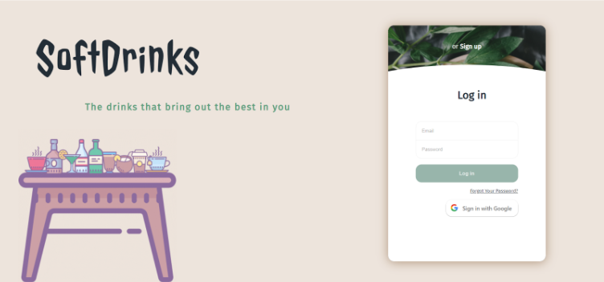- Formulare de Login/Sign-in cu buton de submit
- Buton de conectare cu Google
Change Password Interface
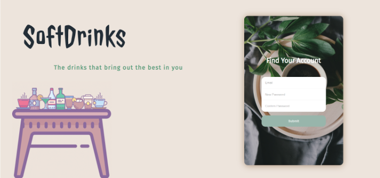Main Page Interface
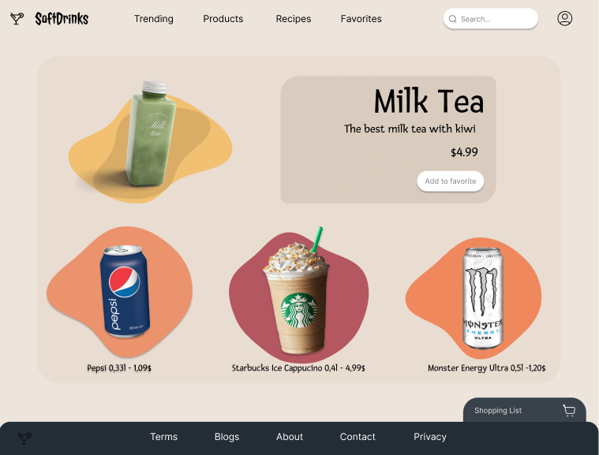- Butoanele asociate meniului principal sunt fixate in top-ul paginilor in asa fel incat sunt accesibile utilizatorilor in orice moment.
User Dashboard Interface
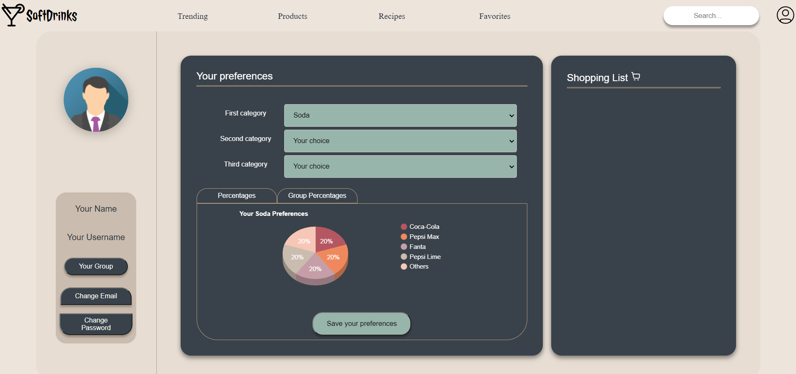- Lista de produse - Shopping List
- Butoane de change password/email ce permit schimbarea datelor utilizatorului.
- Buton de vizualizare a grupului din care face parte utilizatorul.
- Buton pentru Save Preferences ce salveaza statisticile fiecarui utilizator in formate deschise, textuale si grafice – minimal, CSV si SVG.
Admin Dashboard Interface
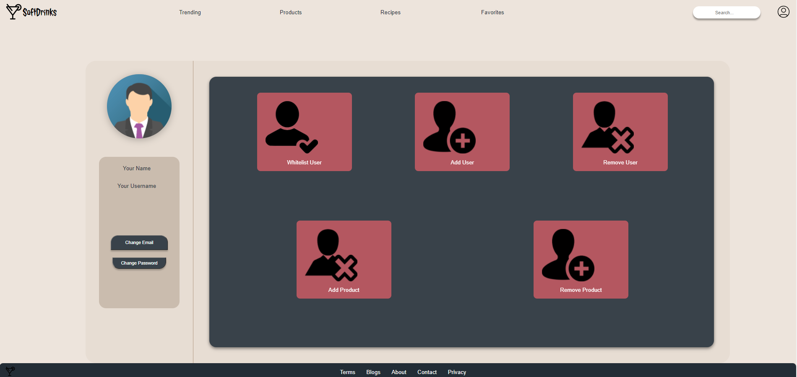- Butoane specifice de moderare a:
- utilizatorilor
- produselor
- Butoane de change password/email ce permit schimbarea datelor administratorului.
Shop Interface
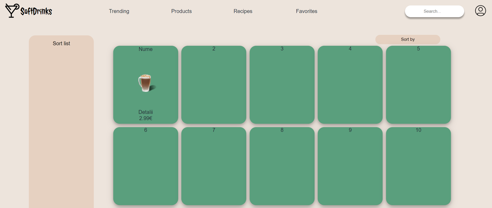 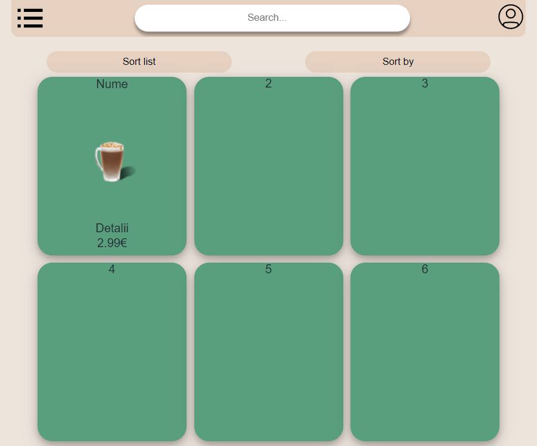- Pe aceasta pagina sunt doua functionalitati noi, Sort by si Order by. Acestea ajuta la sortarea datelor afisate (daca o persoana doareste sa afiseze produsele in ordine alfabetica; sau daca o persoana doreste sa afiseze doar podusele care au un anumit numar de calorii sau sunt produse de o anumita firma)
- Aceste functionalitati isi schimba afisajul in funtie de dimensiunea paginii.
- Totodata, pe o pagina sunt afisate 24 de produse si putem schimba paginile de produse cu ajutorul butoanelor Previous si Next.
- Pagina contine doar un produs, deoarece nu avem conexiunea cu baza de date.
- La hover peste un produs apar doua butoane noi:
- - unul pentru a vedea mai multe detalii despre produs
- - unul pentru a adauga produsul in lista de cumparaturi

Product interface
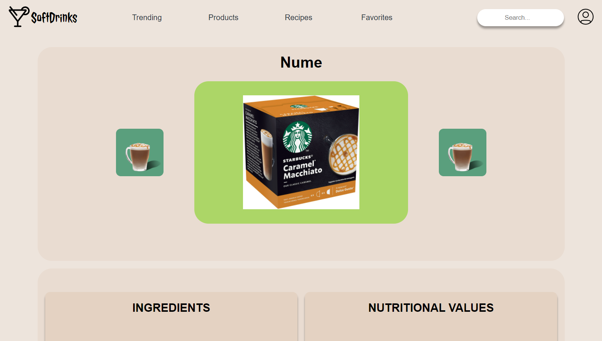- Aceasta pagina este destinata unui produs
- Cele doua iconite din stanga si dreapta ne ajuta sa schimbam imaginile; prin apasarea lor acele imagini vor aparea in partea prinicipala (imaginea mare din centru)
- Mai jos vor aparea detaliile despre produs (INGREDIENTS, NUTRITIONAL VALUES)
Trending Interface
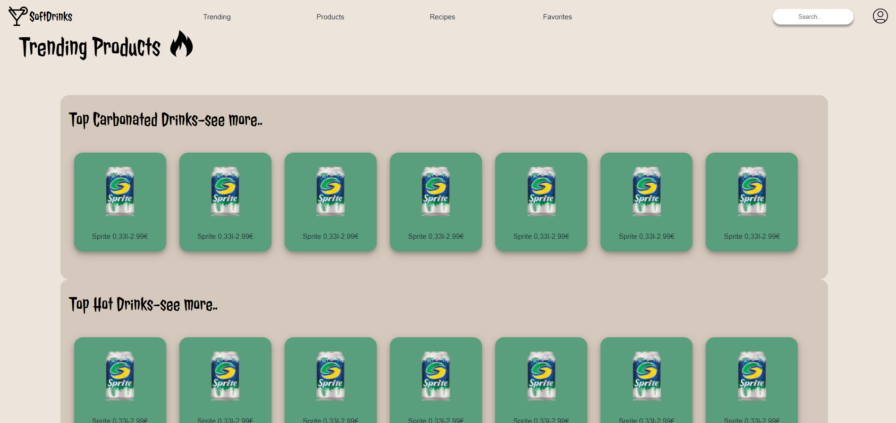- Pe aceasta pagina gasim cate o rubrica speciala pentru fiecare categorie de produse, fiecare avand cele mai populare produse din acea categorie.
- Apasand pe titlul sectiunii, utilizatorul va fi redeirectionat catre o noua pagina unde va putea vedea mai multe produse populare din acea categorie.
- Facand Hover pe produs, utilizatorul poate adauga produsul in Shopping List sau sa acceseze pagina produsului pentru a afla mai multe detalii.
Recipe Interface
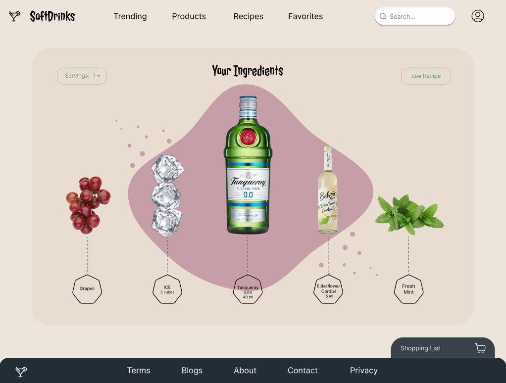- Pagina destinata vizulizarii diferitelor retete de mocktail-uri, cafele, ceaiuri, etc
- Pagina dispune de un buton numit Servings care in functie de ce numar va contine, va actualiza portiile ingredientelor
- Pagina dispuna de un buton See Recipe ce va deschide etapele de urmat ale retetei
3.2 Software Interfaces
Aplicatia se va conecta la baza de date cu produse si va permite vizualizarea matadatelor produselor in componentele specifice:
- Main Page
- Trending
- Favorite
- Products
- Recipes
4.Backend Description
Frontend-ul si Backend-ul sunt în stransa legatura când este vorba de comunicare. Browser-ul trimite request-uri HTTP, primește răspunsuri înapoi și folosește informația pentru a randa paginile pentru ca utilizatorul sa le poată vizualiza.
Backend-ul de obicei răspunde Browserului cu informații legate de HTML, fișiere de tip css, js, json.
Frontend-ul de obicei face request-uri HTTP, informatii diferite din inputul formularelor sau al altor structuri.
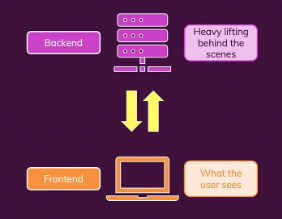Codul va fi structurat in mai multe fișiere, cu nume specifice, pentru a fi ușor de interpretat și de alți programatori.
Datele importante despre autentificarea utilizatorilor vor fi stocate într-un mod securizat în baza de date. Celelalte date despre produse vor fi stocate in baza de date aferenta cu campurile identificatoare.
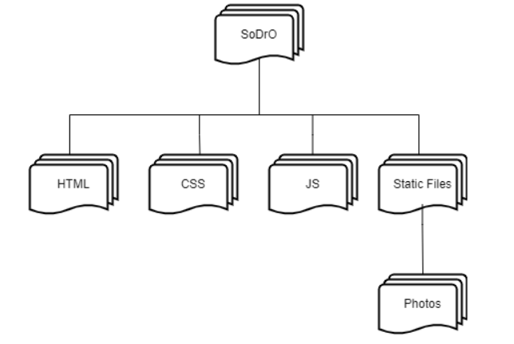